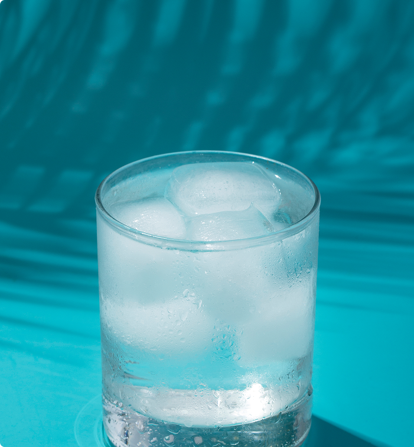

Підрахунок води
Скільки вашому тілу варто пити води та як розуміти, що це досить? Все це залежить від тіла та потреб. Нумо створимо нову здорову звичку разом!
ПочатиЧому варто пити воду?
Підтримка здоров'я організму
Вода необхідна для правильної роботи серця, мозку, нирок і травної системи. Вона допомагає виводити токсини та підтримує баланс рідин.
Енергія та концентрація
Навіть легке зневоднення може викликати втому, головний біль і проблеми з увагою. Вода допомагає залишатися бадьорим і продуктивним.
Краса та самопочуття
Достатня кількість води робить шкіру більш зволоженою та еластичною, підтримує здоровий вигляд волосся і нігтів.
Пити воду це важливо й корисно.
Але треба розуміти свою норму.
Тож створимо вашу норму разом.
